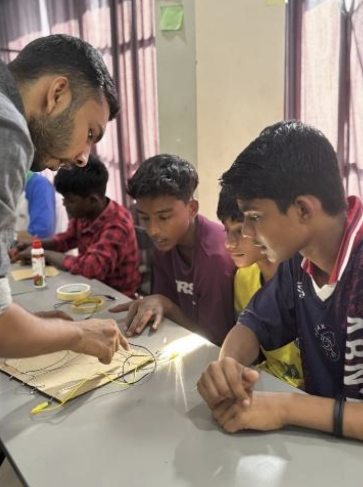

Overview
Students built functional LED quiz boards from scratch, linking circuit fundamentals to a tangible product they could use. The feedback loop of a correct/incorrect LED made debugging feel like a game.
Topics
How electricity flows through a complete circuit
How LEDs respond to correct connections
Circuit building with wires, batteries, and LEDs
Debugging open and short circuits
Activities
Built quiz boards from scratch — no pre-made kits
Green LED lights for correct answers
Red LED lights for incorrect answers
Students tested and corrected faults independently
Photos

Highlights
- Students independently debugged their own circuits
- LED feedback made learning feel like a game
- Strong teamwork — students helped each other troubleshoot
- Sparked genuine interest in electronics and making